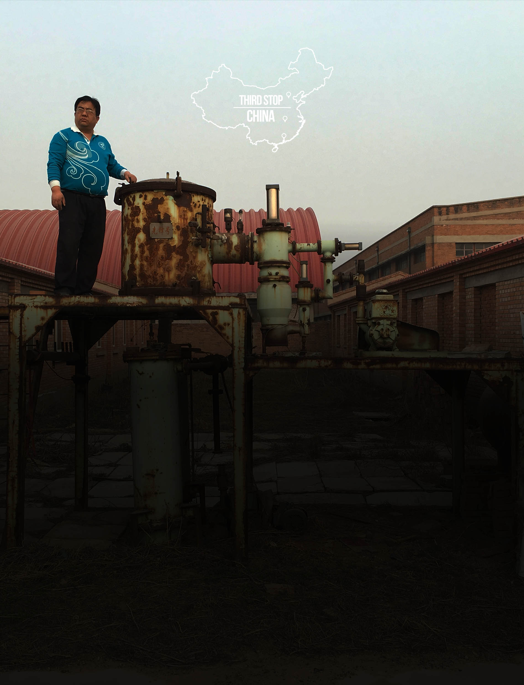

Is the world prepared to deal with millions of dead lithium batteries?

It is clear that the world is shifting from fossil fuel to batteries as industry responds to advances in technology and mounting environmental concerns about the use of oil and coal. What is less clear is where all of these billions of batteries end up at the end of their lives.
Because electric cars emit no fumes, we’ve come to label them as “green.” But while they may be environmentally friendly while they’re in use, once they reach the end of their lifecycle they present distinct environmental challenges.
Most electric car batteries can be used for 8 to 10 years, or 100,000 miles—and then what? If lithium batteries replace oil as the environmentally friendly alternative, then their disposal needs to be sustainable and environmentally friendly. A 2013 report assessing the life cycle of lithium-ion batteries in EV’s the EPA found that batteries that use cobalt and nickel, as lithium-ion batteries do, have the “the highest potential for environmental impacts. These impacts include resource depletion, global warming, ecological toxicity, and human health impacts,” including “adverse respiratory, pulmonary, and neurological effects in those exposed.”
Nowhere is the need to come up with a sustainable, human- and environmentally-friendly approach to batteries more urgent than in China, the largest consumer of electronics and the world’s “electronic wastebasket.” In additional to processing their own discarded electronics—discarded phones, computers, TVs, tablets, DVD players, power tools, batteries, etc.—much of the earth’s electronic waste (commonly referred to as “e-waste”) ends up in Chinese landfills. This is problematic for two reasons—electronic waste contains toxic and reactive materials, and valuable natural resources—like gold, copper, and lithium—end up back in the ground, instead of being recycled and reused.
There is very little public awareness around the hazards of disposing dead batteries in China. “The recycling rate of battery in China is less than 1 percent. So most of the batteries ended up at garbage dump with daily trash,” Wang says. “The trash dumps are hot, high humidity, high pressure environments, it is really easy for the battery shell to break.” When the shells break, Chen says the materials inside the battery could contaminate water and soil, and “enter our food chain, and eventually generate an irreversible damage to the ecosystem.”
To address the country’s growing e-waste problem, the Chinese government has begun promoting the concept of a “circular economy.” Proponents of the circular economy model acknowledge that consumption and waste will continue to increase over the coming years and advocate for recycling and reusing discarded products.
A few hundred miles south of Beijing, in Hubei province, GEM Recycling is demonstrating a profit-driven circular approach to recycling. GEM, a private Chinese enterprise, is a crucial part of China’s circular economy. GEM’s slogan is “Limited Resources, Unlimited Recycling,” and the company views cities “urban mines” with resources—like TVs, cars, and phones—that can be “mined,” processed, and eventually reused.
GEM’s showroom feels like an immaculate museum—there are stacks of old TVs lining the walls, and an exhibit on the world’s worst environmental disasters. Beyond the well-manicured showroom and visitor area is a dismal maze of industrial buildings. Smokestacks pump out dark fumes while employees in yellow hats hustle from one building to the next. Through the windows you can catch glimpses of see enormous piles or sparkling materials and metals.
“We focus on utilizing urban mines and recycling used materials,” say Dr. Yunhe Zhang, GEM’s chief scientist and head of research and development. “In this way, we don’t need exploit new resources from nature and damage the earth. Instead, we can focus on reducing our exploitation of the environment.”
GEM receives thousands of lithium-ion batteries of all sizes across the country, which they break down into component parts and then reuse. “We extract lithium from used battery and turn it into battery’s cathode lithium carbonate—it goes back into batteries again,” Zhang says. When you’re finished with GEM’s tour each visitor receive a passport which permits you “passage to the future” on the “journey of green.” Alongside a personalized photo, the passport thanks visitors for “bearing witness to the history of waste and the civilization of recycling. Let’s practice an eco-friendly lifestyle, and make joint efforts to build a beautiful China!”
If China can figure out how to scale GEM’s approach then lithium-ion battery materials could be reused again and again, reducing the need for exploiting natural resources. But that will require the China government to regulate the thousands of small-scale e-waste businesses whose workers’ livelihoods depend on waste.
Though GEM and the government would have people believe that China has solved its overwhelming electronic waste problem, the reality is that the country has a long way to go.
Much of the first world’s e-waste is shipped to developing countries—like China, India, and Nigeria—where it’s cheap to breakdown and there are no strict environmental guidelines.
Despite China’s efforts to move toward a formalized approach toward recycling, a 2014 United Nations’ study of e-waste in China found that, “due to a range of social and economic factors, the informal sector continues to play a major role in the collection and recycling of e-waste, and informal recycling often leads to detrimental effects on the environment and the health and safety of workers and local communities.”
In Guiyu, an area in southern China, whole communities depend on e-waste to make a living. According to a TIME report, the more than 5,000 small businesses in Guiyu break down more than 1.5 million pounds of electronic waste each year. Men, women, and children sort through huge piles of trash to find anything that can be resold. The unused materials and ash from the burning of useless components ends up in the city’s water. The result is an environmental health crisis—toxic water, horrendous pollution, and high rates of cancer and lead poisoning.
These waste sites are not isolated to the remote areas of the country. In Dong Xiao Kou, just a few minutes from the skyscrapers in downtown Beijing, a dusty road leads past a BMW car dealership to a waste village. At first glance the village looks like the after effects of an earthquake—enormous piles of debris are filled with metal, wire, and discarded electronics. People stand on towering piles of trash—some as high as 30 feet—searching for valuable materials and tossing things down to be stacked in carts and truck beds. Anything that isn’t easily extracted or valuable is buried or burned—the streets are lined with smoking trashcans and burn piles.
Following negative attention from international press, the Chinese government is attempting to crack down on villages like Dong Xiao Kou. But e-waste remains a lucrative industry, and thousands of waste villages and individual collectors continue to be a crucial piece in the country’s e-waste economy.
Liu Sheng and his friends sit around smoking cigarettes and drinking tea in a storefront off an alley in western Shenzhen, China’s biggest manufacturing city. The small room is filled with boxes and boxes of electronics stacked to the ceiling. The young men will spend the rest of the night sorting through the boxes, pulling out any materials that can be resold for a profit. Any batteries they find they test to see if they can be reused or taken apart for valuable materials—if not, the batteries will be treated as trash.
Sheng and his friends have been working in the e-waste industry for six years, and business is good. “There are thousands of small e-waste business like us,” he says. “I got into this industry early, and I’ve generated a lot of profit.”
The truth is that these small businesses are a crucial part of the circular economy—without them, China would drown in waste. The country is not yet equipped to handle the incredible amount of waste it receives—according to the UN report, global volumes of e-waste were likely to rise by more than 20 percent over the next few years. The report estimated that by increased sales and shorter lifetimes of electronic equipment would lead to 50 million tonnes of e-waste being disposed in 2018.
“The government should thank us,” says Wu Zhuo, an e-waste collector who works with Sheng. “They need us. We do their recycling work for them.”
The challenges of dealing with battery disposal isn’t unique to China. As electric vehicles gain popularity in the United States we have to confront the limitations of our current disposal system. And because the batteries are large and dangerous, we cannot legally send them to other countries for disposal.
According to a recent report by the Mineta National Transit Research Consortium (MNTRC), an organization composed of several US university transportation centers, there will be somewhere between 1.3 and 6.7 million large lithium-ion batteries—the type used in electric vehicles—reaching the end of their life by 2035.
“Most of the batteries in electric vehicles now are still in their first life, we haven’t seen a wave of batteries that are at the end of their life. So no one is going “What do we do with these batteries?” said Dr. Charles Standridge, a researcher at Grand Valley State University and the co-author of the MNTRC’s report on post-vehicle application for lithium-ion batteries.
“Right now there is no system in place if you’re lithium car battery died,” Standridge said. “It would probably be taken out of your car and stuck in storage somewhere until someone figures out what to do with it. You cannot put a lithium ion battery packet in your trash. But beyond that there are no regulations.”
Disposing of large batteries is a dangerous and complicated process, made more difficult by the fact that there is no standardization between batteries made by different manufacturers. That means disposal facilities have to learn how to take apart each battery—a time intensive and potential dangerous activity.
“Right now there is no system in place if you’re lithium car battery died,” Standridge said. “It would probably be taken out of your car and stuck in storage somewhere until someone figures out what to do with it. You cannot put a lithium ion battery packet in your trash. But beyond that there are no regulations.”
“There’s a challenge in the variability in types of battery packs,” says Michael Hunter, an employee at Retriev Technologies, one of the US’s biggest battery recycling companies. “Every EV pack is created differently—a lot of the cells look differently and have to be processed differently,” Hunter says. “We’ll basically have original equipment manufacturers [OEMs] send us these batteries from R&D phases or test vehicles.” Then Retriev’s trained technicians deconstruct the batteries by hand to better understand the pack’s construction and materials. Then the reactive lithium components are treated in a proprietary cryogenics process—“ Essentially we’re freezing the batteries before we put them in the hammer mill and extract the lithium carbonate. We have to freeze it because lithium is such a volatile metal.”
Batteries are only “green” if every part of their lifecycle is green. As we grow increasingly dependent on lithium-powered technology, we’ll have to come up with a comprehensive approach to reuse and recycling the battery materials. And this will take the same focus that matches the time, money, and energy that’s gone in to developing the batteries in the first place. There will only be a shift when it becomes cost effective, and many see post-use as the most realistic and commercially viable approach.
Right now scientists are looking at several post-use approaches. “There are two different directions,” says Dr. Zheng Chen, a Stanford battery researcher. “The first is using electrical vehicle batteries after 5 years or 6 years” while they still have a storage capacity of 70 to 80 percent. Though these batteries that are no longer useful in vehicles, they can be used for stationary applications—like storing solar energy for a home.
If the battery really dies and cannot be reused, there’s a second approach. “We can open the battery to recycle the precious metals--including lithium and cobalt. That way will need a more complicated chemical and physical process.” Chen says we’re still “very far away” from achieving the second application.
If toxic materials and dangerous components from these batteries end up in our air, water, and soil, then batteries are not the green sustainable solution to our energy crisis. In order for this to change, the world’s biggest battery consumers and e-waste producers—China and the United States—cannot turn a blind eye to where these batteries end up at the end of their lives.
Recycling lithium elements and coming up with innovative ways to reuse large batteries will have to be a huge piece of solving the energy puzzle. Formalized systems with recycling cost incentives will have to replace informal e-waste networks, and developed nations will have to find ways to treat their own waste instead of sending it off on underdeveloped countries.
This will require a shift from putting money and research into manufacturing, to looking at sustainable ways to treat batteries at the end of their life. But for now, most money and energy is in the manufacturing, not in the recycling.